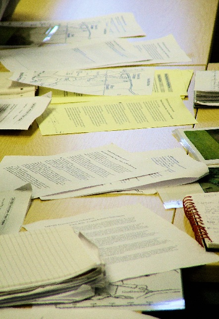

Creative Commons Image

Papers
by Jason Truscott,
flickr.com
, CC BY-NC-ND
Public Domain Image
Photo by Nicolas Flor,
unsplash.com
Personal Image
Photo by Patrick Jenkins
 Photo by Patrick Jenkins
Photo by Patrick Jenkins